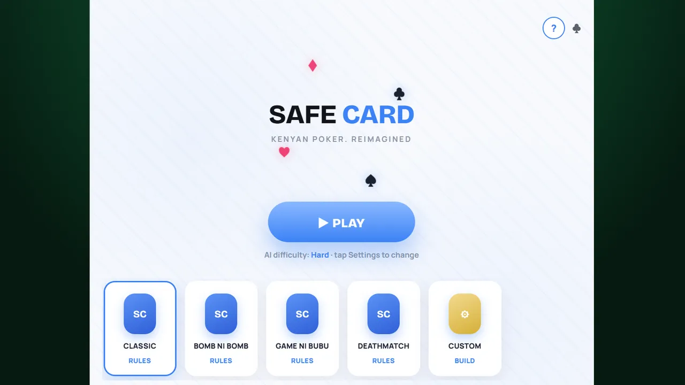
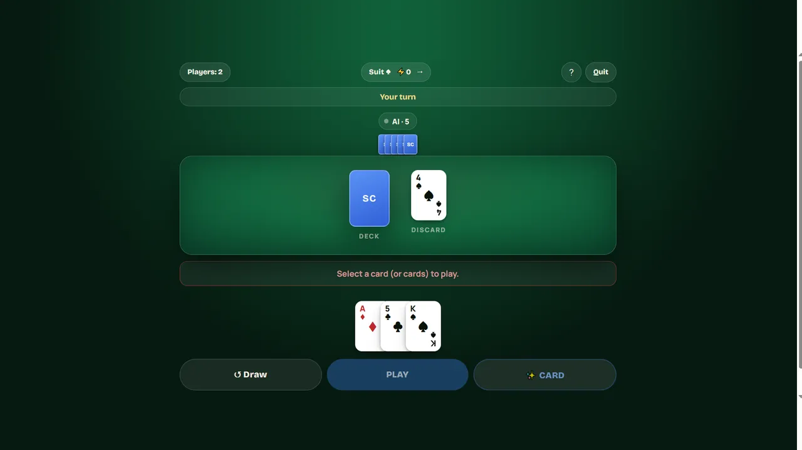
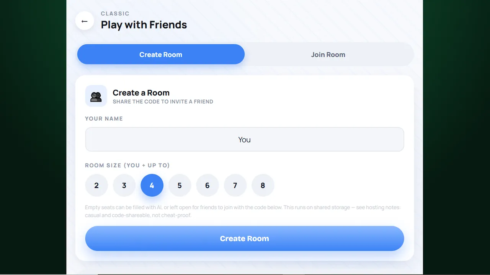

Safe Card began as an idea for a card game with its own identity and style. The goal was to create something that felt like a complete game rather than just a collection of cards on a screen.
That meant thinking about the way players interact with the game, how the interface responds, and how the overall experience should feel — a fast, unpredictable game built around risk, decisions, and survival.
A major part of the project has been developing the game's visual identity. I worked on the card interface, loading screen, main menu, settings, and other parts of the experience to create a consistent presentation.
The design process involved refining layouts, working with typography, improving interactions, and making the interface feel more polished — including solving an issue where cards would blink when tapped, which taught me a lot about how interface updates and animation state affect the user experience.
Safe Card takes the familiar idea of card strategy and turns it into a fast, unpredictable game. Choose a mode, face off against opponents, and make every card count.
Play it in the browser or on your phone, as part of the Nexeric Games studio site.